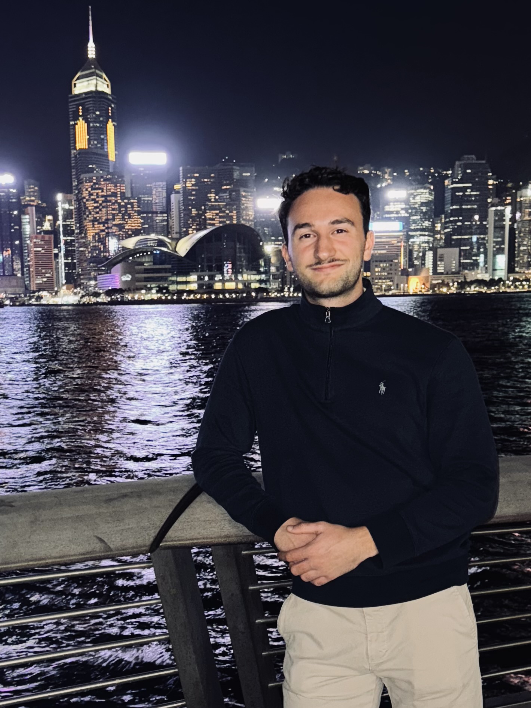
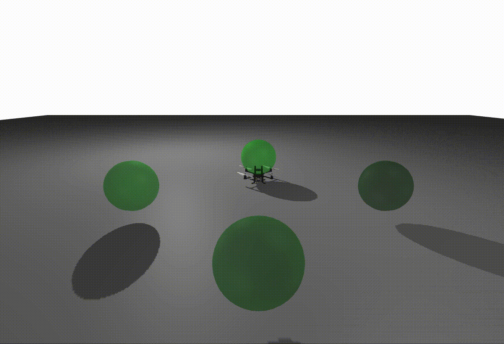
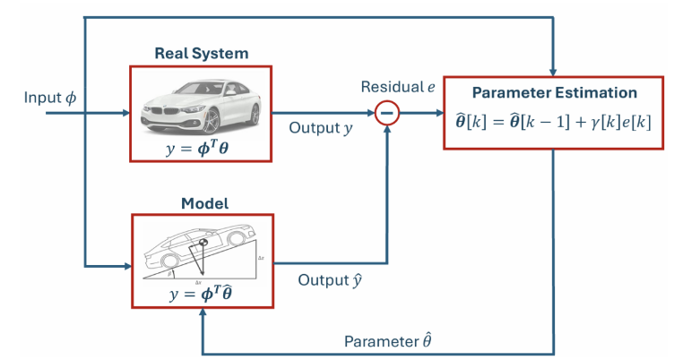
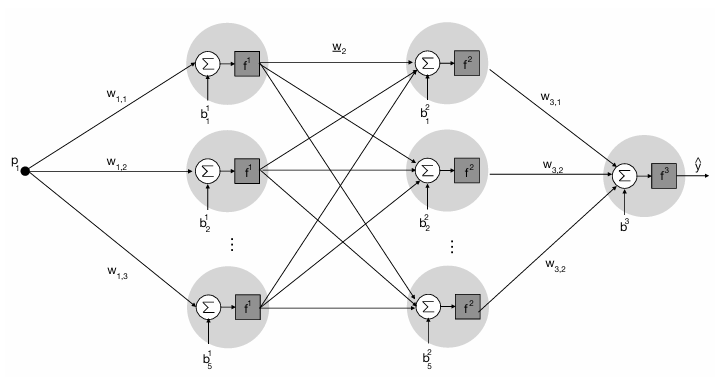
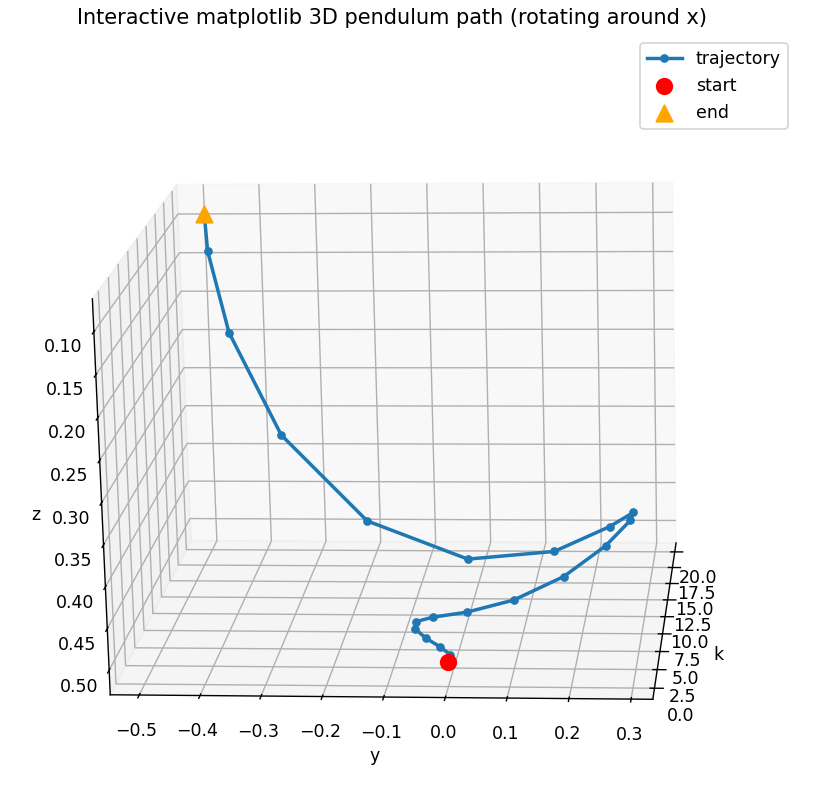

Edonis Elshani
I am a double degree student in Electrical Engineering at the Technical University of Munich and the University of Queensland, and a Visiting Research Fellow at Harvard University. My interests focus on autonomous systems, robotics, and machine learning.
My goal is to enhance the accuracy and robustness of autonomous systems through the integration of learning-based approaches and optimization methods.

About
Currently, I am working on my Master's thesis at the Computational Robotics Group at Harvard University, where I focus on certifiable trajectory optimization for robotic systems using sparse semidefinite relaxations and Lie-group-based modeling.
Previously, I was part of the team at BMW working on fail-operational motion control concepts for Level 3 autonomous driving and at Knorr-Bremse in sensors and integration for rail applications.
Academically, I am pursuing a double degree between the Technical University of Munich and the University of Queensland, combining studies in automation, robotics, optimization, and machine learning with interests in entrepreneurship, international business, power systems, electricity markets, and renewable energy.
- Lie group variational integrators and certifiable trajectory optimization via semidefinite relaxations
- Control and motion planning for autonomous and robotic systems
- Machine learning and optimization methods
- Safe human-robot interaction and collaboration
Publications
Co-authored publication on unconstrained collision injury protection data sets for human-robot interaction.
GitHub
Selected repositories covering control, estimation, machine learning, and certifiable trajectory optimization.

Quadrotor PD Controller Dojo
Julia-based implementation of a PD feedback controller for quadrotor stabilization and navigation in the Dojo simulation environment, including position and attitude control.

Vehicle State Estimation in Automotive Electromobility
MATLAB implementation of a grey-box recursive least squares method for real-time estimation of electric vehicle parameters such as battery condition and vehicle mass.

MLP & Elman Neural Networks for System Identification
MATLAB project implementing Multi-Layer Perceptron and Elman recurrent neural networks for system identification tasks.

Certifiable Trajectory Optimization
Research repository on Lie-group dynamics, polynomial formulations, and semidefinite relaxations for certifiable trajectory optimization of robotic systems.
CV
Experience
Research topic: certifiable trajectory optimization for robotic systems using semidefinite relaxations.
Focus: Fail-Operational Motion Control and HMI for highly automated driving systems.
Focus: sensor validation, integration, automated testing, and compliance analysis for rail applications.
Research topic: experimental human-robot interaction and unconstrained collision injury analysis.
Focus: ECU software validation, hardware-in-the-loop testing, and vehicle-level system testing.
Education
Focus: Automation & Robotics, with coursework in optimization, autonomous systems, robotics, machine learning, and neural networks.
Focus: entrepreneurship, international business, system dynamics, power systems, electricity markets, and renewable energy integration.
Foundation in electrical engineering, information technology, and engineering mathematics.
Projects
- Improved localization accuracy by tuning odometry, LiDAR, and mapping components
- Built a SLAM-based map and optimized Adaptive Monte Carlo Localization and costmaps
Awards & Honors
News
Contact
The easiest way to reach me is by email. You can also find me on GitHub and LinkedIn.